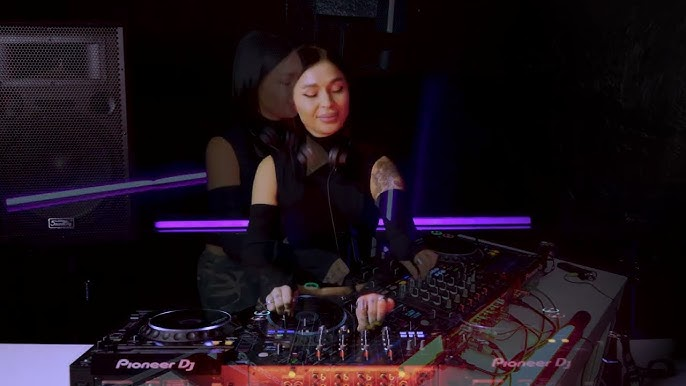

11h - Jardin Chillout
Ambient Morning Flow
Une sélection apaisante pour débuter la journée, avec des mélodies douces et enveloppantes.

DJ Ambient | Mélodies Cosmiques
Nom d'artiste : LUNA SYNC
Genre musical : Ambient, Chillwave, Downtempo
Depuis : 2018
LUNA SYNC est une DJ ambient renommée pour ses paysages sonores envoûtants et ses mélodies cosmiques. Ses sélections musicales créent une atmosphère de détente et d'introspection, parfaite pour les moments de relaxation. Avec des influences spatiales et futuristes, LUNA SYNC transforme chaque set en un voyage intergalactique rempli de sérénité.
Découvrez tous les spectacles et sets proposés par cet artiste
Une sélection apaisante pour débuter la journée, avec des mélodies douces et enveloppantes.

Un voyage spirituel à travers les sons du cosmos, parfait pour la méditation et la détente.

Un set en phase avec le coucher de soleil, mêlant beats subtils et atmosphères cinématiques.